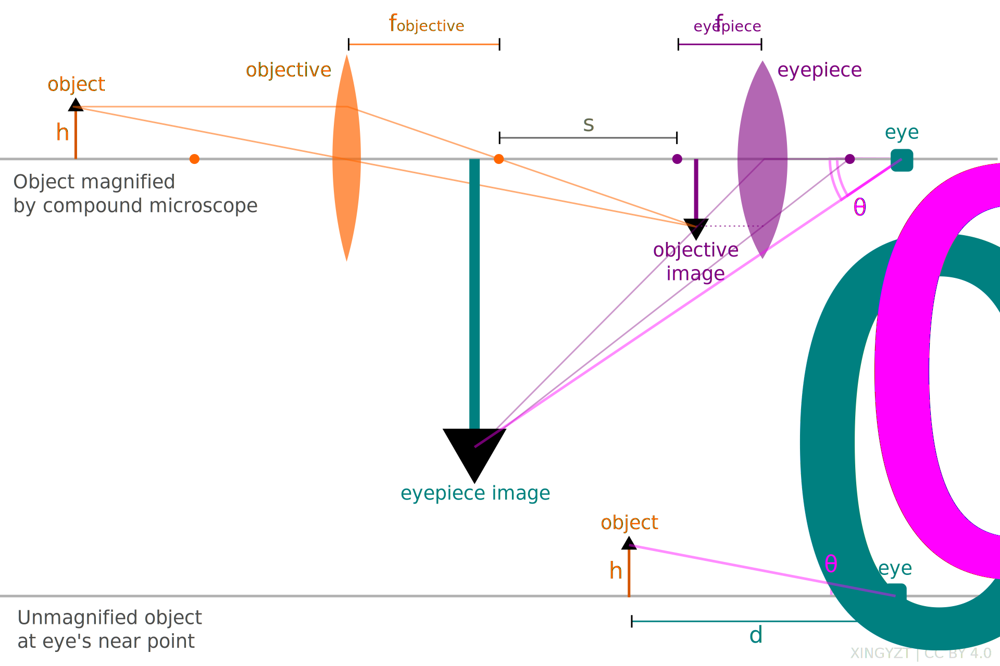
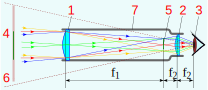
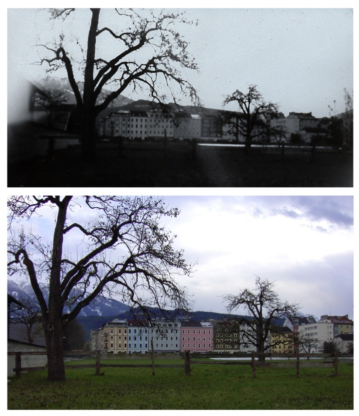

Lecture tutorial 2F
Microscopes
Introduction
- microscopes are optical instruments used to magnify small, close objects that are not visible to the naked eye
- they enable the observation of fine structural details in biological, material, and other samples
Components
- objective lens is placed close to the specimen and creates a magnified real image
- eyepiece lens (ocular) further magnifies the image formed by the objective
- light source and stage are used to illuminate and support the specimen
Total magnification
- the total magnification $M$ is the product of the magnifications of the objective and the eyepiece
- for an objective with focal length $f_o$ and an eyepiece with focal length $f_e$, the approximate total magnification is
$$
M = \frac{L}{f_o} \cdot \frac{25,\text{cm}}{f_e}
$$
- here, $L$ is the tube length and 25 cm is the near point distance for relaxed viewing
Image formation
- the objective lens forms a real, inverted, and magnified intermediate image of the object
- the eyepiece lens acts as a magnifier, producing a virtual, enlarged image of the intermediate image
- the final image is virtual, inverted, and appears at a comfortable viewing distance

from wikipedia, Attribution 4.0 International
Advantages and limitations
- advantages include high magnification and resolution for small-scale structures
- limitations include the need for precise focusing, illumination, and often sample preparation
- resolution is limited by diffraction, with a theoretical limit of about $0.61 \lambda / \text{NA}$ where NA is the numerical aperture
Telescopes
Introduction
- telescopes are optical instruments designed to magnify distant objects
- they allow observation of celestial bodies and faraway phenomena in greater detail
Components
- objective lens/mirror collects light from the object and forms a real image
- eyepiece lens magnifies the image formed by the objective
Angular magnification
- the total angular magnification $M$ of a telescope is defined as the ratio of the angle subtended by the image at the eye to the angle subtended by the object as seen by the unaided eye
- for an objective with focal length $f_o$ and an eyepiece with focal length $f_e$, the magnification is given by
$$
M = \frac{\theta'}{\theta} = \frac{h/f_e}{h/f_o} = \frac{f_o}{f_e}
$$
- with the small angle approximation $ \theta' \approx h/f_e$ and $ \theta \approx h/f_o$
Image formation
- the image of the first lens (objective) becomes the object for the second lens (eyepiece)
- objective lens forms a real, inverted image near its focal point
- eyepiece lens acts as a magnifying glass producing a virtual, inverted final image
Types of telescopes
Refracting telescopes (Keplerian)
- design uses two converging lenses
- objective lens has a long focal length to collect light and form a real, inverted, diminished image at its focal plane
- eyepiece lens has a short focal length and magnifies the real image
- advantages include simple design and good image quality for small apertures
- disadvantages include heavy, expensive objective lenses and chromatic aberration

from wikipedia, CC0 1.0 Universal

from wikipedia, Attribution-Share Alike 3.0 Unported
Reflecting telescopes (Newtonian)
- design uses a concave mirror as the objective to collect and focus light
- light reflects off the primary mirror forming a real, inverted image at the focal point
- a secondary flat mirror reflects the image to the side for viewing through an eyepiece
- advantages include absence of chromatic aberration and easier manufacture of large mirrors
- disadvantages include diffraction effects from the secondary mirror and the need for periodic realignment

from wikipedia, Attribution-Share Alike 4.0 International
Pinhole Cameras

from wikipedia, public domain
Introduction
- pinhole cameras are simple optical devices that form images using a tiny aperture instead of a lens
- they demonstrate basic principles of image formation through rectilinear propagation of light
Components
- a light-tight box with a small pinhole on one side acts as the aperture
- an image screen or photographic surface is placed opposite the pinhole inside the box
Effective focal length
- the effective focal length $f$ is defined as the distance between the pinhole and the image plane
- this distance determines the image size and sharpness
- increasing $f$ enlarges the image but reduces brightness and sharpness due to diffraction
Image formation
- each point on an object emits light in all directions, but only rays passing through the pinhole reach the screen
- the result is an inverted, real image formed on the image plane
- no lenses are involved, so no refraction or chromatic aberration occurs
Image properties
- image is always real, inverted, and reduced or magnified depending on object distance and pinhole-to-screen distance
- image sharpness improves with a smaller pinhole but brightness decreases
- very small pinholes cause diffraction, blurring the image
Advantages and limitations
- advantages include simplicity, low cost, and infinite depth of field
- limitations include dim images, long exposure times, and limited resolution due to diffraction and small aperture size

from wikipedia, GNU-Lizenz für freie Dokumentation
{kind=link}
{kind=link}
{kind=link}
{kind=link}
{kind=link}
{kind=link}